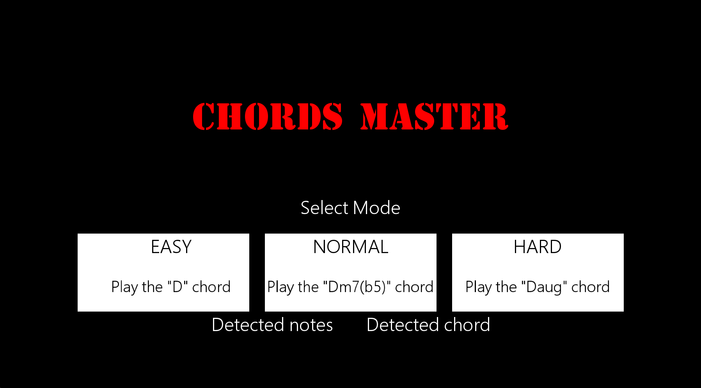
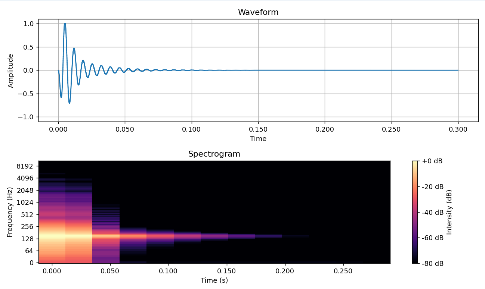
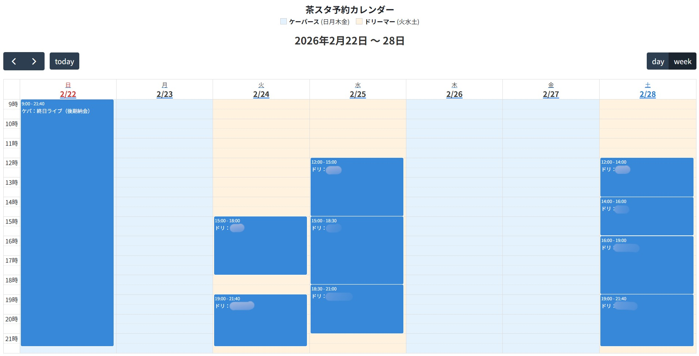
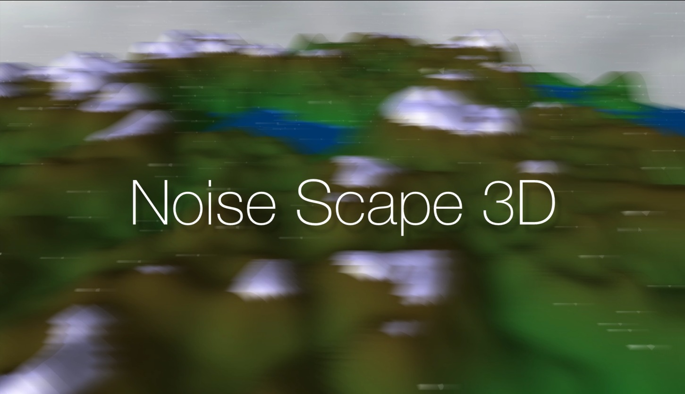

01 / PROJECT

Processing / Signal Processing
CHORDS MASTER (2024)
ゲーム感覚でギターコードを学習できるプログラム。
明治大学 総合数理学部
先端メディアサイエンス学科 3年

ゲーム感覚でギターコードを学習できるプログラム。

ドラムマシンの音を解析し、Pythonを用いて再現するプロジェクト。

サークルのスタジオ予約管理を自動化するシステム。

無限に広がる地形を散策できるインタラクティブ3DCG作品。
授業課題で作成した映像作品。
Studio Oneを使用したオリジナル楽曲制作。作詞・作曲からミックス・マスタリングまですべて行っています。